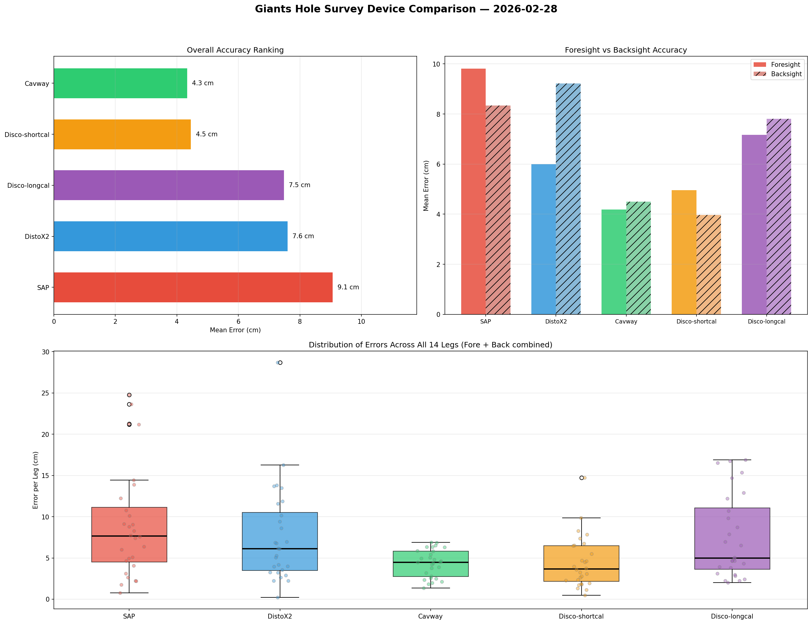

Giants Hole, Derbyshire — 28 February 2026
Device Comparison: Methodology and Results
Methodology
A comparative accuracy test of five cave survey instruments was conducted on 28 February 2026 in the entrance series of Giants Hole, Derbyshire. A traverse of 14 legs was marked with tipex on the cave walls to provide fixed reference points throughout the experiment, totalling approximately 100 m.
Five devices were tested:
- Shetland Attack Pony (SAP) — a purpose-built electronic cave survey instrument;
- DistoX2 — a modified Leica Disto with integrated compass and clinometer;
- Cavway — a modern survey device from China;
- DiscoX (short calibration) — a SAP-based unit calibrated using a short calibration routine;
- DiscoX (long calibration) — the same SAP-based unit calibrated using a full (long) calibration routine.
The inclusion of both short and long calibration variants of the same DiscoX device allowed the effect of calibration rigour to be assessed independently of hardware differences.
Three survey teams each traversed the same route sequentially, with the SAP team surveying first. For each leg, every device recorded both a foresight and a backsight reading, each comprising distance (m), compass bearing (°), and clinometer angle (°). This yielded ten independent measurements per leg (five devices × two directions), providing a robust basis for comparison.
Analysis
The raw polar measurements (distance, compass, clino) from each device were converted to Cartesian displacement vectors (Δx, Δy, Δz) for each leg. This transformation allows direct spatial comparison between instruments, avoiding the difficulty of combining angular and linear errors in polar coordinates.
Since no independent ground-truth survey of the traverse was available, a consensus reference position was established for each leg by computing the trimmed mean of all ten Cartesian vectors. The trimmed mean reduces the influence of any single outlying measurement, providing a more robust estimate of the true displacement than a simple arithmetic mean.
The accuracy of each device on each leg was then quantified as the three-dimensional Euclidean distance between its Cartesian vector and the trimmed mean reference:
where (Δxi, Δyi, Δzi) is the displacement vector from device i and (Δx̄, Δȳ, Δz̄) is the trimmed mean. This per-leg error was computed separately for foresight and backsight readings. The mean error across all 14 legs provides an overall accuracy metric for each device and direction.
Results
Table 1 summarises the mean error for each device, separated by foresight and backsight, and ranked by overall (combined) mean error.
| Rank | Device | Foresight Error (m) | Backsight Error (m) | Overall Mean Error (m) |
|---|---|---|---|---|
| 1 | Cavway | 0.042 | 0.045 | 0.043 |
| 2 | DiscoX (short calibration) | 0.050 | 0.040 | 0.045 |
| 3 | DiscoX (long calibration) | 0.072 | 0.078 | 0.075 |
| 4 | DistoX2 | 0.060 | 0.092 | 0.076 |
| 5 | SAP | 0.098 | 0.083 | 0.091 |
The Cavway and the short-calibration DiscoX achieved the best accuracy, with mean errors of approximately 4–5 cm from the consensus position. These two devices also exhibited the most consistent performance across legs, with the lowest spread of per-leg errors (Figure 1, bottom panel).
The DistoX2 and long-calibration DiscoX occupied a middle tier at approximately 7.5 cm mean error. Notably, the DistoX2 showed a pronounced asymmetry between foresight and backsight accuracy (6.0 cm vs 9.2 cm), suggesting a possible calibration or systematic bias in one direction.
The SAP recorded the largest mean error at 9.1 cm, with its foresight readings (9.8 cm) being notably less accurate than its backsights (8.3 cm).
The difference between the simple arithmetic mean and the trimmed mean was small for all legs (typically < 2.5 cm), indicating that no single device produced extreme outliers and that the consensus reference is well-constrained.
An unexpected finding was that the short calibration routine produced more accurate results than the long calibration on the same DiscoX hardware (4.5 cm vs 7.5 cm). This warrants further investigation, as it may reflect the specific calibration conditions on the day rather than a general superiority of the short routine.

Discussion
All five devices produced mean errors below 10 cm per leg, which is within acceptable tolerances for typical cave survey work. However, the two-fold difference in accuracy between the best-performing device (Cavway, 4.3 cm) and the worst (SAP, 9.1 cm) is significant, particularly for surveys where cumulative error over many legs is a concern.
The sequential survey design means that the results may be partially confounded by team and operator effects — the teams were not randomised across devices. The SAP result in particular should be interpreted with caution, as it was surveyed first (before teams had fully warmed up to the station locations) and was operated by a different individual to the other devices. A fully controlled study would randomise device–operator pairings and survey order.
The use of a consensus trimmed mean as the reference position, rather than an independent high-precision survey, is a limitation. However, with ten independent measurements per leg, the trimmed mean provides a reasonable approximation of the true displacement, and any bias it introduces would affect all devices equally.